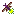

Icon Library Page 40
The icons listed here have been 'described' using multiple types of neural networks. Much of the data is junk. The label is the most likely object in the image, however none of this has been verified by a human. When this page is re-generated the labeling might change.
The best way to use this page is to use the ctrl+f search function.
Page Index
[1] [2] [3] [4] [5] [6] [7] [8] [9] [10] [11] [12] [13] [14] [15] [16] [17] [18] [19] [20] [21] [22] [23] [24] [25] [26] [27] [28] [29] [30] [31] [32] [33] [34] [35] [36] [37] [38] [39] [40] [41] [42] [43] [44] [45] [46] [47] [48] [49] [50] [51] [52] [53] [54] [55] [56] [57] [58] [59] [60] [61] [62] [63] [64] [65] [66] [67]
| image | labels |
|---|---|
| sun, stopwatch, stop watch, digital watch, stopwatch, pick, pick, plectrum, plectron | |
| person, cleaver, meat cleaver, chopper, cleaver, cleaver, cleaver, cleaver, meat cleaver, chopper | |
| person, hourglass, hourglass, bearskin, punching bag, hourglass | |
| person, chain saw, chainsaw, digital watch, digital watch, rock beauty, stopwatch, stop watch | |
| dog, espresso maker, remote control, digital clock, pick, letter opener, paper knife, paperknife | |
| phone, spatula, switch, Windsor tie, sunscreen, pick, plectrum, plectron | |
| person, muzzle, nipple, whistle, plate rack, torch | |
| spaceship, slot, one-armed bandit, scoreboard, digital clock, scoreboard, cassette player | |
| car, chain saw, chainsaw, digital clock, scoreboard, whistle, pick, plectrum, plectron | |
| person, pick, plectrum, plectron, punching bag, hourglass, stopwatch, matchstick | |
| person, cleaver, meat cleaver, chopper, crossword puzzle, whistle, safety pin, pick, plectrum, plectron | |
| person, panpipe, pandean pipe, syrinx, panpipe, digital clock, cleaver, chain saw, chainsaw | |
| phone, chain saw, chainsaw, chain saw, power drill, EntleBucher, langur | |
| person, tripod, panpipe, bannister, panpipe, panpipe, pandean pipe, syrinx | |
| person, maze, labyrinth, maze, screw, assault rifle, safety pin | |
| person, book jacket, dust cover, dust jacket, dust wrapper, book jacket, digital clock, digital clock, pick, plectrum, plectron | |
| person, cleaver, meat cleaver, chopper, stopwatch, remote control, spatula, oboe, hautboy, hautbois | |
|  | flower, jersey, T-shirt, tee shirt, panpipe, digital clock, rock beauty, three-toed sloth, ai, Bradypus tridactylus |
| person, isopod, espresso maker, Windsor tie, oboe, pedestal, plinth, footstall | |
| person, chain saw, chainsaw, chain saw, Windsor tie, chain saw, pick, plectrum, plectron | |
| dog, matchstick, ocarina, digital clock, ocarina, pick, plectrum, plectron | |
| tree, strawberry, pomegranate, throne, maraca, strawberry | |
| person, chain saw, chainsaw, screen, whistle, whistle, pick, plectrum, plectron | |
| person, chain saw, chainsaw, maraca, digital clock, rock beauty, maraca | |
| flower, packet, fire screen, slot, daisy, panpipe, pandean pipe, syrinx | |
| dog, guillotine, analog clock, analog clock, sunscreen, oboe, hautboy, hautbois | |
| person, affenpinscher, monkey pinscher, monkey dog, bearskin, Sealyham terrier, milk can, bearskin, busby, shako | |
| phone, packet, Band Aid, chain saw, croquet ball, comic book | |
| cat, pick, plectrum, plectron, digital watch, slot, jaguar, pick, plectrum, plectron | |
| person, sunscreen, sunblock, sun blocker, sunscreen, sunscreen, sunscreen, bulletproof vest | |
| car, cassette, cassette, chain saw, chain saw, hand-held computer, hand-held microcomputer | |
| person, assault rifle, assault gun, assault rifle, spotlight, knee pad, siamang, Hylobates syndactylus, Symphalangus syndactylus | |
| person, chain saw, chainsaw, hand-held computer, sunscreen, safety pin, comic book | |
| person, packet, nipple, lotion, croquet ball, nipple | |
| person, pinwheel, pinwheel, maraca, maraca, safety pin | |
| person, nipple, whistle, whistle, nipple, nipple | |
| sun, packet, rock beauty, spaghetti squash, rock beauty, gong, tam-tam | |
| person, packet, packet, thresher, whistle, pick, plectrum, plectron | |
| person, nipple, sunscreen, ocarina, stopwatch, whistle | |
| person, cleaver, meat cleaver, chopper, safety pin, nipple, ocarina, nipple | |
| person, ski, digital clock, digital clock, digital clock, chain saw, chainsaw | |
| person, ski, book jacket, digital clock, nematode, digital clock | |
| person, stopwatch, stop watch, digital watch, stopwatch, pick, pick, plectrum, plectron | |
| person, pick, plectrum, plectron, pick, sunscreen, ocarina, panpipe, pandean pipe, syrinx | |
| person, pick, plectrum, plectron, safety pin, safety pin, ocarina, book jacket, dust cover, dust jacket, dust wrapper | |
| person, wall clock, Petri dish, nipple, Petri dish, pick, plectrum, plectron | |
| person, ocarina, sweet potato, ocarina, Windsor tie, knee pad, power drill | |
| person, Windsor tie, Windsor tie, tobacco shop, chiffonier, Windsor tie | |
| tree, thresher, thrasher, threshing machine, maraca, lotion, whistle, hair slide | |
| person, abaya, hand-held computer, binder, Windsor tie, chain saw, chainsaw | |
| sun, pinwheel, hair slide, lotion, analog clock, pinwheel | |
| sun, packet, honeycomb, honeycomb, analog clock, sunscreen, sunblock, sun blocker | |
| tree, waffle iron, nipple, waffle iron, plunger, bearskin, busby, shako | |
| person, loupe, jeweler's loupe, harmonica, panpipe, whistle, letter opener, paper knife, paperknife | |
| person, barometer, analog clock, frying pan, baseball, gong, tam-tam | |
| person, plate rack, nipple, abacus, whistle, chain saw, chainsaw | |
| person, eggnog, spatula, Band Aid, candle, assault rifle, assault gun | |
| person, Band Aid, whistle, pill bottle, whistle, gong, tam-tam | |
| person, cleaver, meat cleaver, chopper, cleaver, whistle, hook, revolver, six-gun, six-shooter | |
| phone, remote control, remote, espresso maker, remote control, remote control, remote control, remote | |
| person, analog clock, screen, screen, spotlight, analog clock | |
| person, slot, one-armed bandit, slot, corn, slot, comic book | |
| flower, handkerchief, hankie, hanky, hankey, handkerchief, eggnog, theater curtain, hair slide | |
| dog, nipple, ocarina, ocarina, Windsor tie, golden retriever | |
| person, Band Aid, Band Aid, cleaver, candle, pick, plectrum, plectron | |
| person, shoji, shoji, hourglass, space bar, Band Aid | |
| person, Windsor tie, sunscreen, Windsor tie, ocarina, comic book | |
| person, ocarina, sweet potato, ocarina, whiskey jug, ocarina, panpipe, pandean pipe, syrinx | |
| person, neck brace, Windsor tie, nipple, ocarina, golden retriever | |
| person, ocarina, sweet potato, chiffonier, chiffonier, chiffonier, bearskin, busby, shako | |
| person, milk can, chiffonier, chiffonier, chiffonier, chain saw, chainsaw | |
| person, pick, plectrum, plectron, chain saw, muzzle, ocarina, bearskin, busby, shako | |
| person, power drill, thresher, lotion, sunscreen, thresher, thrasher, threshing machine | |
| person, milk can, stopwatch, thresher, whiskey jug, jersey, T-shirt, tee shirt | |
| dog, chain saw, chainsaw, panpipe, tobacco shop, lion, panpipe, pandean pipe, syrinx | |
| person, packet, packet, safety pin, sunscreen, pick, plectrum, plectron | |
| sun, gong, tam-tam, Windsor tie, panpipe, barrel, panpipe, pandean pipe, syrinx | |
| phone, nipple, nipple, nipple, sunscreen, nipple | |
| flower, hair slide, thresher, waffle iron, ping-pong ball, hair slide | |
| person, pinwheel, pinwheel, pinwheel, whistle, chain saw, chainsaw | |
| person, face powder, switch, switch, ocarina, pedestal, plinth, footstall | |
| person, Windsor tie, slot, slot, pick, jersey, T-shirt, tee shirt | |
| car, hand-held computer, hand-held microcomputer, hand-held computer, hand-held computer, hand-held computer, slot, one-armed bandit | |
| car, hand-held computer, hand-held microcomputer, moving van, screen, screen, web site, website, internet site, site | |
| person, rule, ruler, panpipe, rapeseed, table lamp, chain saw, chainsaw | |
| person, panpipe, pandean pipe, syrinx, Windsor tie, Windsor tie, vine snake, Windsor tie | |
| person, analog clock, analog clock, panpipe, panpipe, panpipe, pandean pipe, syrinx | |
| spaceship, hand-held computer, hand-held microcomputer, hand-held computer, cassette player, hand-held computer, plate rack | |
| phone, analog clock, packet, barometer, colobus, pick, plectrum, plectron | |
| person, analog clock, analog clock, screen, analog clock, analog clock | |
| spaceship, Petri dish, golf ball, nematode, remote control, theater curtain, theatre curtain | |
| person, analog clock, digital watch, digital clock, digital clock, analog clock | |
| phone, panpipe, pandean pipe, syrinx, panpipe, screen, maraca, pick, plectrum, plectron | |
| phone, analog clock, stopwatch, lotion, hair spray, pick, plectrum, plectron | |
| phone, analog clock, analog clock, moving van, oil filter, pick, plectrum, plectron | |
| person, scoreboard, scoreboard, chain saw, combination lock, magnetic compass | |
| tree, loupe, jeweler's loupe, pick, loupe, indri, magnetic compass | |
| person, maraca, ocarina, pick, rock beauty, maraca | |
| spaceship, spotted salamander, Ambystoma maculatum, hair slide, revolver, pick, pick, plectrum, plectron | |
| person, pick, plectrum, plectron, maraca, whistle, whistle, shield, buckler |